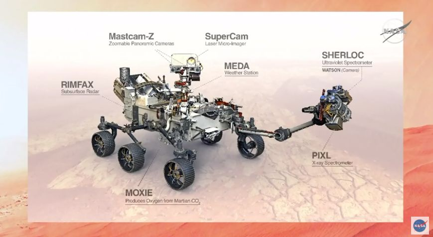

La tecnología del Perseverance es sorprendente. De hecho, será el vehículo más pesado (1.025 kilos) y grande (3 metros de largo por 2,7 de ancho y 2,2 de alto) jamás enviado a explorar un planeta (el último en viajar a Marte fue el Curiosity, en 2011)... y también el que más cámaras porta: hasta 19.
En su interior esconde un experimento científico que puede ser de vital importancia para las futuras misiones tripuladas a Marte: el Moxie, un generador oxígeno a partir del CO2 que es mayoritario en la atmósfera marciana, algo que será clave tanto para la supervivencia de los astronautas como para la generación de un combustible que les permita volver a la Tierra. También medirá la radiación y monitorizará la climatología marciana... además de contar con un micrófono que ofrecerá por primera vez el sonido de la superficie de otro planeta.

Instrumentos científicos de Perseverance (NASA)
Mastcam-Z: Un sistema de cámaras que tomará imágenes panorámicas a color de la superficie de Marte. De igual forma, tienen la capacidad de hacer zoom y enfocar objetos distantes para hacer análisis más detallados.
MEDA: Esta es la parte del vehículo será la encargada de realizar mediciones climatológicas como la temperatura, humedad y dirección del viento.
SHERLOC: Se encuentra montado en el brazo robótico del rover. Su función será detectar minerales, moléculas orgánicas y señales de vida con el uso de un láser y una cámara.
RIMFAX: Servirá para observar las características geológicas que yacen bajo la superficie de Marte gracias al uso de ondas de un radar.
SuperCam: Con el uso de una cámara, láser y espectrómetros -un aparato que analiza frecuencias de movimiento-, esta herramienta identificará la composición química, atómica y molecular de las rocas y el suelo de Marte.
Helicóptero: Además en esta misión se sumó un pequeño helicóptero que lleva por nombre Ingenuity y pesa 1.8 kilogramos. La NASA quiere saber si es posible sobrevolar un vehículo más pesado en Marte.
MOXIE: Este instrumento está encargado de producir oxígeno a partir de la atmósfera marciana compuesta de dióxido de carbono.
PIXL: Un instrumento que medirá la composición de las rocas a una mínima escala. De igual forma, podrá tomar fotos detalladas y cercanas de las rocas y la textura del suelo. Con PIXL, los científicos esperan encontrar señales de vida microbiana.
En total, Perseverance cuenta con 23 cámaras, es un vehículo autónomo que identifica y evita obstáculos. Además, el vehículo lleva a bordo tres chips de silicio con los nombres de casi 11 millones de personas que se inscribieron para “viajar en la misión”.